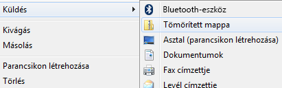

Labor, 1. hét: parancssor, ZIP
Pohl László, Czirkos Zoltán · 2019.09.30.
Operációs rendszer, Windows parancssor alapismeretek: fájlok, parancssori argumentumok.
Bár az átlagos felhasználó nem szokta használni, a Windows is rendelkezik egy ún. parancssori felhasználói felülettel, ahogyan a Unix típusú operációs rendszerek is. Ezen a felületen különböző parancsokat begépelve lehet elvégezni az alapvető feladatokat, pl. fájlok létrehozását, listázását és törlését. A mai laboron többek között ezzel is megismerkedünk.
- Ne feledkezz meg a címtár regisztrációról a login.bme.hu oldalon! Be kell állítani egy jelszót, ami a HSZK gépein a belépéshez szükséges. Ne hagyd az utolsó pillanatra, mert két nap is lehet a módosítás átfutása!
- Töltsd le és telepítsd az otthoni gépedre a félév során használt fejlesztőkörnyezetet a leírás szerint!
A további feladatok megoldása önkéntes.
A Start menü Futtatás… parancsát választva indítsd el a cmd.exe programot! (Windows 10 esetén:
a Start gombra jobb klikk, és Futtatás, vagy Windows + R.) A továbbiakban a
megjelenő konzolablakban kell dolgozni. A föl-le billentyűkkel kiválaszthatóak a korábban beírt
parancsok, így nem kell egy dolgot többször begépelni.
Program indítása parancssorból
Egy program indításához csak be kell írni a nevét. Írd be:
notepad.exe
Erre elindul a Jegyzettömb, mintha a Start menüből indítottad volna.
A Windows automatikusan kiegészíti a programok nevét az ahhoz tartozó kiterjesztéssel
(végződéssel, extension, .com, .exe, .bat). Így a programot a
.exe kiterjesztés beírása nélkül is futtathatod. Zárd be a Jegyzettömböt,
és próbáld ki így is:
notepad
Programok paraméterei
A legtöbb konzolos alkalmazás, de gyakran az ablakokat használó programok is, kaphatnak paramétereket. Próbaképp írd be az alábbi sort. Mit tapasztalsz?
notepad szoveg.txt
Egy programnak tetszőleges számú parancssori paramétere, más néven parancssori argumentuma (command line argument) lehet. Ezeket a program neve után írjuk, és szóközzel választjuk el egymástól.
Ha paraméterként fájlt adunk meg, és az útvonalban vagy a fájlnévben szóköz van, normál esetben a Windows a szóközzel elválasztott elemeket külön paraméternek tekintené. Ezért kell ilyenkor idézőjelek közé tenni azt. Pl.:
notepad "Uj szoveg.txt"
Elérési útvonal – path
Honnan tudta az előbb a Windows, hogy hol van a notepad.exe? Hiszen az is egy fájl, amit
meg kell keresnie a program elindításához. Onnan, hogy van egy lista azokról a mappákról,
ahol a gyakran használt programok vannak. Így nem kell mindig beírni a mappa teljes nevét. A listát így tudod kiíratni:
path
A kurzor az ún. prompt végén villog. Ez alapesetben az aktuális útvonalból
(mappa nevéből, path) és a > jelből áll. Ezt figyeld majd, miközben dolgozol!
A mappát (folder) a parancssori parancsok a directory szóból származtatják (a mappák másik neve, magyarul könyvtár). A mappa tartalmának listázása:
dir
Az eredmény a mappa tartalma: itt további mappák, valamint fájlok lehetnek. Ha nem a legfölső
szinten (a gyökérkönyvtárban) vagyunk (C:\), akkor egy . és egy
.. nevű mappa (<DIR> jelzi) is látható. A . az aktuális
mappát jelenti, a .. az egy szinttel feljebb lévőt. Navigálj el egy Windows Fájlkezelővel a
parancssori ablakod mappájába, és hasonlítsd össze a listát az Fájlkezelőben látható tartalommal!
A dir parancsnak számos paramétere (kapcsolója) van, ezekről bővebb információ a
dir /?
paranccsal kapható. A többi parancsnak is van hasonló helpje, ezt a továbbiakban nem jelezzük külön.
Mappa váltása
Mappát váltani a chdir paranccsal, vagy ennek rövidebb változatával, a
cd-vel lehet. Lépj egy szinttel feljebb:
cd ..
Lépj a gyökérkönyvtárba:
cd \
vagy
cd /
A mappák neveit a \ (fordított per vagy visszaper (backslash), AltGr+Q) választja el egymástól az elérési útvonalon. A Windows támogatja a UNIX-ból származó /-t is, a két jel bármelyikét bármikor használhatjuk. A Windows hasonlóan rugalmas a kis és nagybetűk kezelésében: a mappák és fájlok és parancsok nevében nem számít, hogy kis- ill. nagybetűről van szó (pl. notepad, Notepad, NOTEPAD, stb. egyaránt használható). Más rendszerek azonban megkülönböztetik ezeket. Informatikusként sokféle rendszerrel dolgoznod kell majd, ezért jobb, ha mindent a tényleges nevén használsz.
Menj most vissza a felhasználód saját mappájába, a lentihez hasonló módon! Az 111111 helyére a felhasználóneved kerül.
cd C:\Users\111111\
Mappa létrehozása és törlése
Mappát létrehozni az mkdir vagy md parancsokkal lehet:
md clabor
Mappát törölni az rmdir vagy rd paranccsal lehet:
rd clabor
A parancs a mappát csak akkor törli, ha az üres.
Vigyázz! Ha a következő sort írod, két mappa jön létre, egy „c” és egy „labor” nevű: md c labor.
Ha „c labor” nevű mappát szeretnél, tedd idézőjelbe a nevet: md "c labor"! (Akkor is szabad idézőjelbe tenni, ha nincs benne szóköz? Próbáld ki!)
Egyes parancsoknak, mint pl. a dir-nek is, ún. wildcard-okkal megadott
fájlneveket is lehet adni paraméterként. Pl. az alábbi sor csak az .exe
kiterjesztésű fájlokat listázza:
cd c:\Windows dir *.exe
A ? karakterrel egy, a * karakterrel több karaktert
helyettesíthetünk a névben. Pl.: dir x*e kilistázza az x-szel kezdődő, e-re
végződő fájlokat. Akár több * is lehet: dir x*py*e. A kérdőjel használata:
dir C_85?.NLS.
A more parancs sok dologra jó. Most a begépelt szöveg ismételt megjelenítésére fogjuk használni. Írd be:
more
Most nem jelent meg a prompt, ami mutatja, hogy a more program éppen fut, és
várja tőlünk a bemenetét. Írj be tetszőleges szöveget, és nyomd meg az Enter-t. Mi
történik? Ezt többször is megismételheted. A Ctrl+Z billentyűkombinációval léphetsz
ki a more-ból, vissza a parancssorba.
Jegyezd meg: a more fájl vége jelig olvas be szöveget. Ha ezzel találkozik,
kilép. Ha billentyűzetről gépelsz, a Windowsban a fájl, vagyis a begépelt szöveg vége jelet a
Ctrl+Z-vel lehet adni; ezt üres sorban kell írni, tehát Enter után.
Írd most be:
more > szoveg.txt
Gépeld be ismét szövegeket! Mit tapasztalsz? Több sor begépelése után lépj ki a
more-ból a szokásos módon! Listázd ki a mappa tartalmát! Mit tapasztalsz?
C:\WINDOWS> more > szoveg.txt Access denied
Előfordulhat, hogy a mappa, amelyben épp vagy, írásvédett. Ekkor hibaüzenetet fogsz kapni.
(Vajon miért nem engedi a gép, hogy az operációs rendszer fájljai közé írj?)
Ha kell, keress másik mappát, amelyben dolgozni fogsz, pl. C:\Users\xxxxx.
Kérd a laborvezető segítségét!
Írd be:
more < szoveg.txt
Most mit látsz? Figyeld meg, hogy most nem kellett Ctrl+Z-t írni a kilépéshez, mert a more
a szoveg.txt fájl tartalmát jelenítette meg.
Magyarázat: A konzolos programok a felhasználókkal a szabványos bemenet (standard input) és a szabványos kimenet (standard output) segítségével kommunikálnak. A szabványos bemenet alapértelmezés szerint a billentyűzet, a szabványos kimenet pedig a képernyő. Ezek azonban, a fenti módon, átirányíthatók. A programok nem is tudják, hogy valójában honnan olvasnak és hová írnak, billentyűzetről/képernyőre, vagy fájlból/fájlba.
Tipp: ha egy régebben beírt parancshoz hasonlót szeretnél újra beírni, akkor a ↑ felfelé nyíl billentyűt használva visszakeresheted a régebben beírt sorokat.
more >> szoveg.txt
A fenti parancsot írva a szoveg.txt fájl végéhez fűződik az újonnan beírt szöveg (egy
> esetén törli a korábbi szoveg.txt-t, ha volt olyan). Ha nem létezett a
szoveg.txt, mindkét esetben létrehozza.
A programoknak a szabványos kimenet mellett van egy szabványos hibakimenete is, a
hibaüzeneteket ide szokták írni. Alapértelmezés szerint ez is a képernyőre kerül kiírásra. Ha a
program kimenetét átirányítjuk, pl. more nincsilyen.txt > szoveg.txt, és a more
valami hibaüzenetet szeretne közölni, akkor a hibaüzenet továbbra is a képernyőn jelenik meg,
nem kerül a fájlba. Ha a hibaüzenetet szeretnénk fájlba írni, akkor azt a 2>
átirányítással adhatod meg:
more 2> hiba.txt
Tipp: ha egy meglévő fájl nevét nem szeretnéd végig begépelni, akkor kezdd el az első
pár betűvel, és utána nyomd meg a Tab billentyűt. Erre a Windows parancssora
ki fogja egészíteni a fájlnevet. Pl. a szoTab olyan lesz, mintha
beírtad volna, hogy szoveg.txt.
Windows pipe
Írd be, hogy
cd c:/Windows/System32 dir
Túl sok fájl neve került kiírásra. A more parancs igazi funkciója, hogy egy szöveget képernyőnyi részekre osztva
jelenítsen meg. Használd ezt a mappa tartalmának kilistázására (a | az AltGr+W kombinációval érhető
el):
dir | more
A bemutatott módszer a csővezeték (pipe): az egyik program kimenete adja a másik program bemenetét, vagyis ezúttal is a szabványos kimenet és bemenet átirányításáról van szó.
A more programban szóköz-t leütve egy képernyőnyivel tovább haladhatsz. Ha csak egy sornyit
akarsz léptetni, üss Enter-t! Kilépni a Q billentyű lenyomásával lehet.
ZIP archívumokba több fájl csomagolható és tömöríthető. Utána az archívum egyetlen fájlként kezelhető, pl. küldhető el e-mailben, vagy tölthető fel valahova. ZIP archívumot – vagy tömörített mappát, ahogy a Windows nevezi – legegyszerűbb a Fájlkezelővel létrehozni. Ennek két módja lehetséges, próbáld ki mindkettőt!
Első módszer
- Keresd meg a tömöríteni kívánt fájlokat, pl. a mai órai kísérletezés közben létrehozott szövegeket: szoveg.txt, hiba.txt és a többiek.
- Jelöld ki az összeset, amelyre szükség van. Ezt megteheted az egérrel kattintva és húzva, téglalapot rajzolva föléjük, vagy a Ctrl gombot nyomva tartva, és egyesével kattintva rájuk.
- Ha sikerült a kijelölés, kattints a jobb egérgombbal valamelyikükre, és válaszd ki a menüből a Küldés / Tömörített mappát: 
- Ezután megadhatod a fájl nevét, és a ZIP archívum elkészült.
Ugyanez az Asztalon is működik, ha eddig a fájlokat ott hoztad létre.
Második módszer
- Kattints jobb egérgombbal a semmibe a Fájlkezelőben vagy az asztalon. Válaszd ki az Új / Tömörített mappa menüpontot.
- Létrejön egy „Új tömörített mappa” nevű ZIP fájl. Kattints erre a jobb gombbal, és nevezd át arra, amire szeretnéd.
- Ha megvan, utána a tömöríteni kívánt fájlokat egyesével húzd rá az egérrel őket a ZIP fájlra. A többszörös kijelölés itt ugyanúgy működik, kattintás közben a Ctrl billentyűt nyomva tartva.
A létrehozott archívumokra duplán kattinva a Windows Fájlkezelője megmutatja azok tartalmát is. Így ellenőrizni tudod, mi van bennük. Ezekből (és ezekbe) ugyanúgy másolhatók a fájlok, mint egy mappába. De szem előtt kell tartani, hogy valójában ezek nem igazi mappák. Ha bármire szükség van, akkor ki kell bontani az archívumot. A kicsomagolás legegyszerűbben a jobb egérgombbal kattintásra előjövő menüből lehetséges, a „Kibontás” menüpontot kiválasztva.